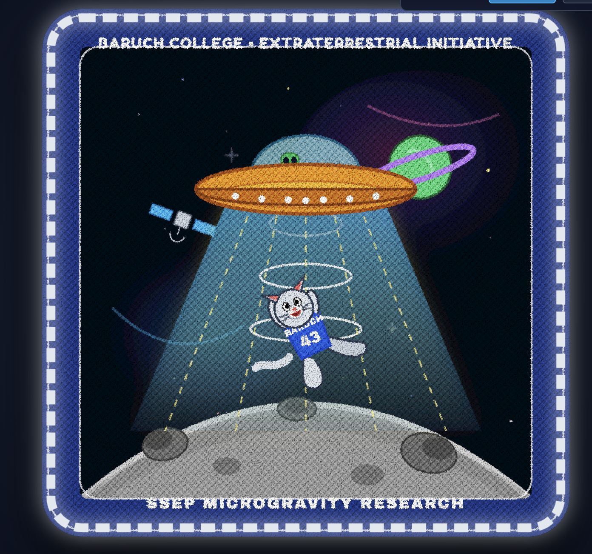

Artist Statement
This mission patch design represents Baruch College's bold venture into space exploration and scientific discovery through the Student Spaceflight Experiments Program (SSEP). At the center of the design, our campus mascot, the Bearcat, is playfully drawn being pulled upward into an alien spacecraft, symbolizing curiosity, ambition, and a leap into the unknown fields of microgravity research.
Every symbol in the composition bridges campus identity with cosmic exploration. The spaceship's glowing tractor beam and lunar landscape anchor the scene in hands-on scientific investigation, while distant planets, stars, and a passing satellite highlight the vast scale of space. The iconic Baruch blue and white jersey grounds the interstellar adventure in our collegiate spirit.
← Back to Home